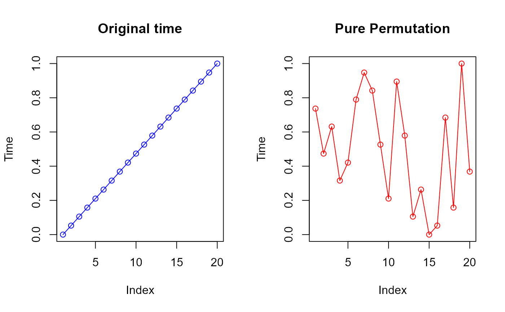
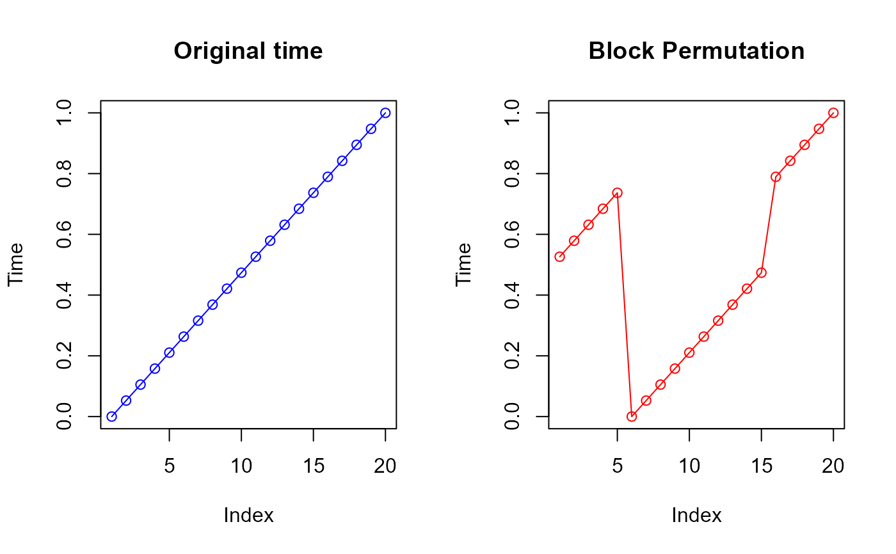

Produces a side-by-side plot comparing the temporal component of an original spatio-temporal point pattern with that of a permuted (or block-permuted) version. This graphical diagnostic is intended to assess the effect of temporal reordering procedures used in separability tests.
plot_procedures(
original,
permuted,
title = "Permutation",
col = c("blue", "red"),
pch = 1,
...
)A matrix or data frame with at least three columns \((x,y,t)\). The time coordinate is taken from column 3.
A matrix or data frame with the same structure as original.
The time coordinate is taken from column 3.
Character string; title for the permuted panel.
Character vector of length 2 giving colors for the original and permuted panels.
Plotting character passed to plot.
Further graphical parameters passed to plot.
The function is invoked for its side effect of producing a plot and returns no value.
The function is commonly employed to visualize temporal permutations
generated by procedures such as sim.procedures or
block.permut, which underpin pure and block permutations-based
inference for first-order separability (see Ghorbani et al., 2021,
Section 3.2).
The function uses base R graphics to display two panels:
The temporal ordering of the original point pattern.
The temporal ordering after permutation or block permutation.
This diagnostic is particularly useful when validating permutation-based
inference procedures such as chi2.test,
dHS.test, and global.envelope.test.
Ghorbani, M., Vafaei, N., Dvořák, J., & Myllymäki, M. (2021). Testing the first-order separability hypothesis for spatio-temporal point patterns. Computational Statistics & Data Analysis, 161, 107245.
# \donttest{
set.seed(123)
X <- cbind(x = runif(20), y = runif(20),
time = seq(0, 1, length.out = 20))
# Example: visualize pure permutation
sim_pure <- sim.procedures(X, nperm = 1, method = "pure")[[1]]
plot_procedures(X, sim_pure, title = "Pure Permutation")

# Example: visualize block permutation (requires Block_permutation)
if (requireNamespace("combinat", quietly = TRUE)) {
sim_block <- block.permut(nblocks = 4, X = X, nperm = 1)[[1]]
plot_procedures(X, sim_block, title = "Block Permutation")
}

# }